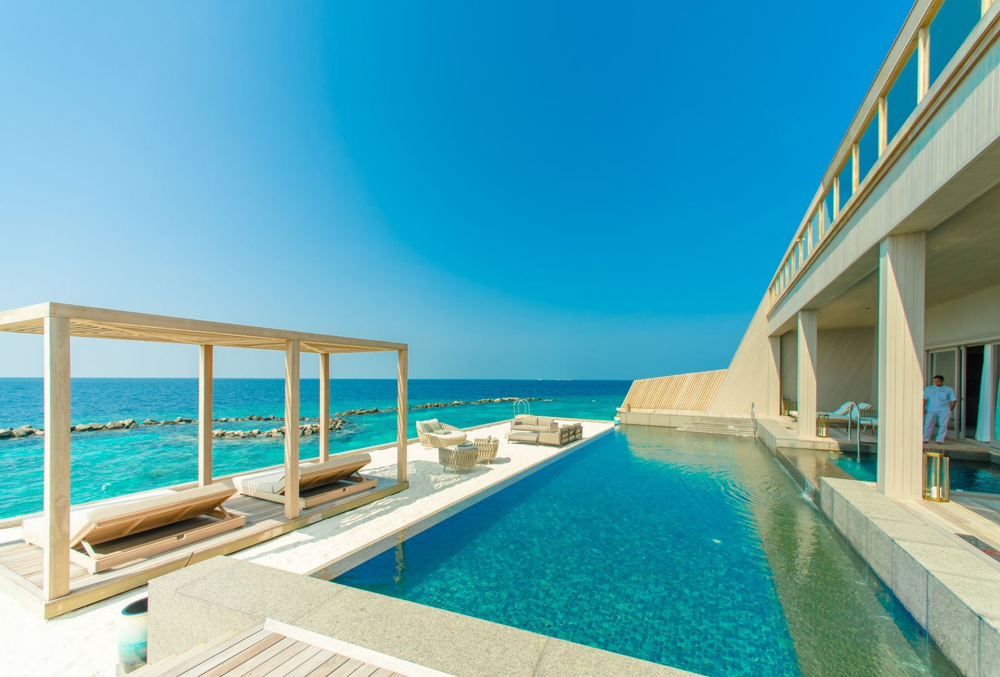
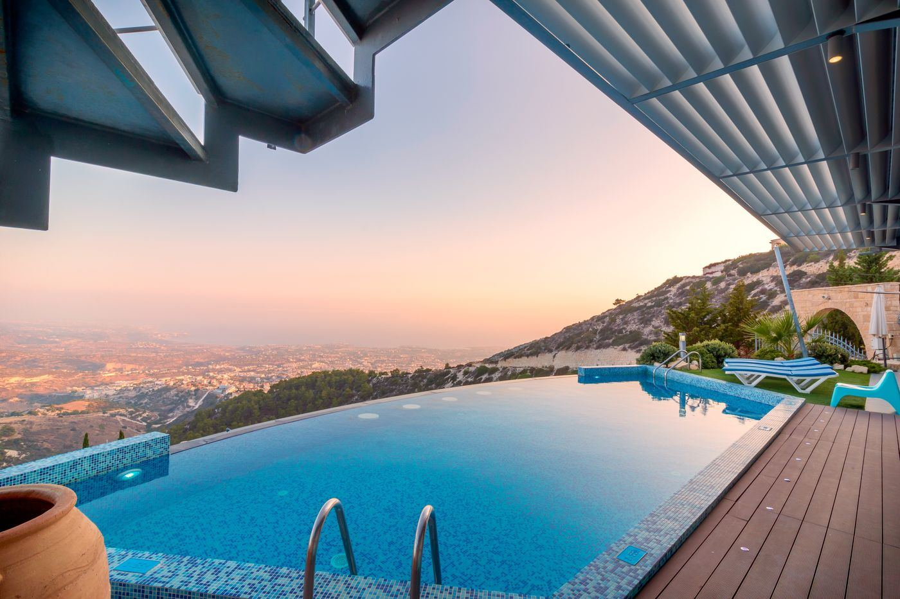
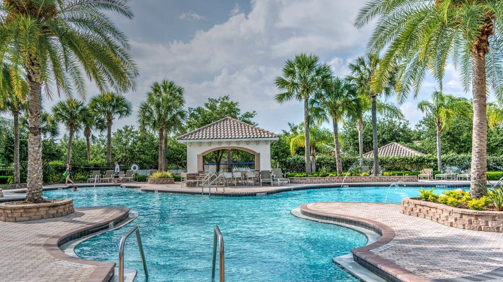
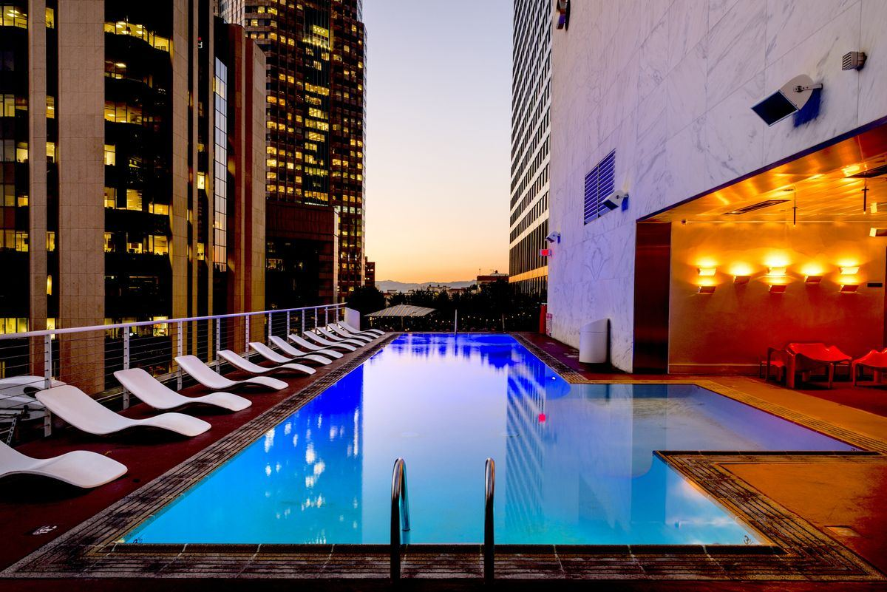

Pages locales
Une page par zone rentable : “pisciniste + ville”, “construction piscine + département”, “rénovation piscine + région”.
SEO local · devis piscine · contenus saisonniers
Un micro-site pour comprendre comment capter les particuliers qui cherchent une piscine, une rénovation, un entretien ou un dépannage près de chez eux — sans dépendre uniquement des plateformes de devis ou de la publicité.

Positionnement
Un pisciniste ne cherche pas forcément “un outil SEO”. Il cherche surtout à remplir son carnet de rendez-vous, recevoir des demandes sérieuses et éviter les prospects trop flous. Le contenu SEO sert à répondre aux questions que les particuliers tapent avant de contacter une entreprise.
Le site est donc construit autour des vraies intentions : trouver des clients, référencer son entreprise de piscine, créer un site crédible, publier des articles utiles, puis produire ces contenus plus vite avec Wisewand.
Système d’acquisition
Une page par zone rentable : “pisciniste + ville”, “construction piscine + département”, “rénovation piscine + région”.
Photos avant/après, type de bassin, contraintes terrain, délai, options choisies et témoignage client.
Prix, entretien, sécurité, hivernage, remise en route, pompe à chaleur, coque vs béton, liner, volet roulant.
CTA clairs, formulaire court, zones d’intervention visibles, garanties, délais de réponse et qualification du projet.
Calculateur
Ce calculateur ne promet rien. Il permet simplement de visualiser pourquoi un contenu bien positionné sur une requête locale peut devenir rentable quand le panier moyen est élevé.
Cartographie SEO
La page locale qui capte les prospects proches et explique vos zones d’intervention.
Le contenu qui attire les particuliers en phase de comparaison et prépare la demande de devis.
Une intention souvent plus urgente : liner, fuite, margelles, filtration, volet, pompe.
Un flux régulier de recherches saisonnières, idéal pour vendre aussi des contrats récurrents.
Ce que cherchent vos prospects



FAQ
En captant directement les recherches locales des particuliers : une fiche Google optimisée, des pages « pisciniste + ville », des articles qui répondent aux questions (prix, délais, démarches) et un site qui inspire confiance avec de vraies photos de chantiers. Les plateformes restent possibles en complément, mais vous n’êtes plus dépendant de leurs tarifs ni de leurs leads partagés.
Comptez généralement 2 à 6 mois selon votre zone et votre concurrence. Les recherches locales peu disputées (« pisciniste + petite ville », « rénovation liner + ville ») peuvent générer des demandes en quelques semaines, tandis que les requêtes larges comme « prix piscine » demandent plus de temps et de contenu.
Dans l’ordre : une page par ville ou zone d’intervention rentable, une page par service (construction, rénovation, entretien), des pages « prix » par type de piscine, puis vos réalisations détaillées. Chaque page doit se terminer par un appel à l’action clair vers la demande de devis.
Oui, et c’est souvent plus rapide : « rénovation liner », « fuite piscine », « remise en route piscine » sont des recherches urgentes, saisonnières et moins concurrentielles que la construction. Elles alimentent un flux régulier de demandes et de contrats d’entretien récurrents.
Non. Plus de devis piscine est un site éditorial indépendant édité par JFE DIGITAL. Il partage une méthode d’acquisition pour les professionnels de la piscine et recommande des outils, dont certains via des liens affiliés, sans jamais garantir de résultat de positionnement.
Production de contenus SEO
Commencez avec les idées et les plans de ce site, puis utilisez un outil comme Wisewand pour produire des articles structurés plus vite, avec une vraie logique SEO.
Lien potentiellement affilié. Le SEO ne garantit jamais une position : les résultats dépendent de votre zone, de votre concurrence, de vos avis, de votre site et de la régularité de publication.